重要提醒：这张卡更适合长期保号、接收短信验证码、低频使用英国号码等场景。人在英国以外时，建议关闭移动数据和数据漫游，避免产生高额漫游费用。
目录
收到卡后必读：插卡前先做 3 个设置
为避免产生不必要的海外漫游费用，请在插入 SIM 卡前先完成以下设置。尤其是人在中国或英国以外地区使用时，建议全程连接 Wi‑Fi，并关闭移动数据相关开关。
1. 关闭数据漫游
进入手机：设置 → 移动网络 / 蜂窝网络 → 选择 giffgaff 卡 → 关闭「数据漫游」。
不建议在中国或英国以外地区使用 giffgaff 移动数据上网，海外数据漫游通常按 MB 计费，费用较高。
2. iPhone 关闭苹果服务
iPhone 用户插卡前建议先关闭：iMessage 和 FaceTime。
原因是系统可能尝试用短信激活这些服务，从而产生短信费用。完成使用后是否重新开启，可按自己需求决定。
3. 先连接 Wi‑Fi
插卡前请先连接稳定 Wi‑Fi，再插入 SIM 卡并等待信号。
这样可以避免手机在识别 SIM、后台同步、登录 App 或接收系统通知时误用移动数据。
推荐顺序：连接 Wi‑Fi → 关闭数据漫游 → iPhone 关闭 iMessage / FaceTime → 插卡开机 → 等待信号。
在中国漫游常见资费参考
| 项目 | 参考费用 | 建议 |
|---|---|---|
| 月租 | £0 | 不购买套餐时通常无固定月租。 |
| 接收短信 | 免费 | 适合接收验证码，但第三方平台是否下发验证码取决于平台风控。 |
| 发送短信 | 约 £0.30 / 条 | 可作为保号操作之一，建议只在需要时发送。 |
| 接听 / 拨打电话 | 约 £1 / 分钟 | 非必要不建议使用，避免余额快速消耗。 |
| 移动数据 | 约 £0.20 / MB | 强烈建议关闭数据漫游，优先使用 Wi‑Fi。 |
以上为海外漫游常见参考，国家/地区、运营商规则和价格可能变化，最终以 giffgaff 官网或 App 当前显示为准。
可选安全设置：关闭语音信箱 / 呼叫转移
如果这张卡主要用于接收短信验证码，不打电话、不接电话，建议关闭语音信箱或呼叫转移，避免未接来电、拒接电话被转入语音信箱后产生额外费用。
方法一：打开手机拨号界面，输入 ##002# 后按拨号键。这个操作通常用于取消呼叫转移 / 呼叫转接。
方法二：如果拨号关闭失败，可登录 giffgaff 账户联系官方客服 Ask an Agent 协助处理。
英文话术：Hi, I am currently abroad. To avoid roaming charges, I would like to disable my voicemail completely. I have tried to do it myself but failed. Could you please help me disable voicemail on my number? Thank you.
不同手机和漫游网络显示可能不同；如以后需要重新开启语音信箱，建议通过 giffgaff 官方客服确认当前正确方式。
账户密码安全说明
如果购买的是已激活卡，请以随卡说明中的账户信息为准。首次登录后，建议立即修改密码，并确认/绑定自己的邮箱。
如果无法登录，可在 giffgaff 登录页点击 Forgot your password?，通过手机号、用户名或邮箱重置密码。
保号提醒：建议每 170 天检查一次
giffgaff 号码需要保持活跃。建议在手机日历设置每 170 天 提醒一次，提前完成一次有效操作，例如发送一条短信、购买话费或购买套餐。
注意：长期不使用可能导致号码被停用、余额失效，号码回收后通常无法找回。只接收短信通常不建议当作唯一保号方式。
一、新手快速说明
激活前准备
准备 SIM 卡上的 6 位激活码、可接收邮件的邮箱、稳定网络，以及信用卡 / 借记卡或 16 位 Voucher 充值码。
激活方式
可以通过信用卡 / 借记卡充值激活，也可以使用 giffgaff Voucher 礼品卡充值码激活。
长期使用建议
激活后请记录保号日期。每次余额变动后重新设置提醒，建议提前到 170–175 天左右操作。
二、空白卡新户激活教程
下面是从空白实体卡到完成激活的完整流程。页面按钮和文案可能会随官方更新而变化，但整体逻辑通常是：输入激活码 → 注册账户 → 选择 I don't want a plan / Add credit → 充值或兑换 Voucher → 填写资料 → 完成激活。
01访问激活页面
打开 giffgaff 激活页面，输入卡片上的 6 位激活码，然后点击激活按钮。
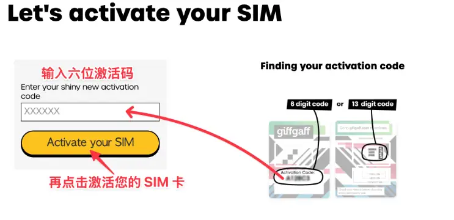
第 1 步：输入 6 位激活码
02输入邮箱
输入用于注册和接收通知的邮箱，点击 Next。建议使用长期稳定、自己能正常登录的邮箱。
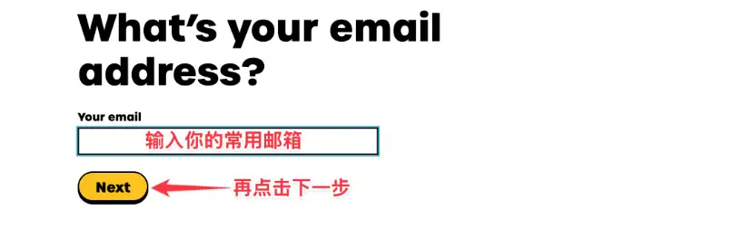
第 2 步：输入邮箱地址
03确认邮箱验证码
打开邮箱，找到 giffgaff 发来的验证码，输入后点击 Confirm。
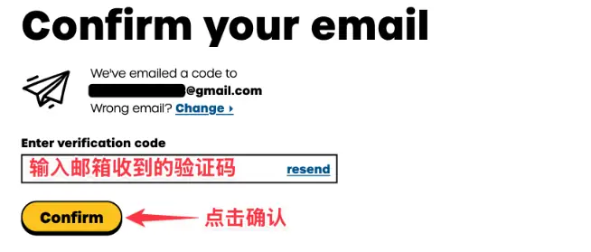
第 3 步：邮箱验证码确认
04创建密码
设置账户密码。建议密码包含大小写字母、数字和符号，长度不少于 12 位。
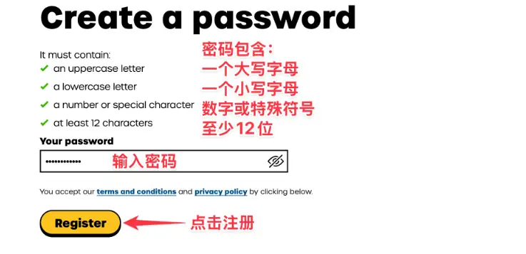
第 4 步：创建账户密码
05营销选项
页面询问是否接收推荐或促销信息时，可按需要选择；如果不需要，可以选择 No, thanks 后继续。
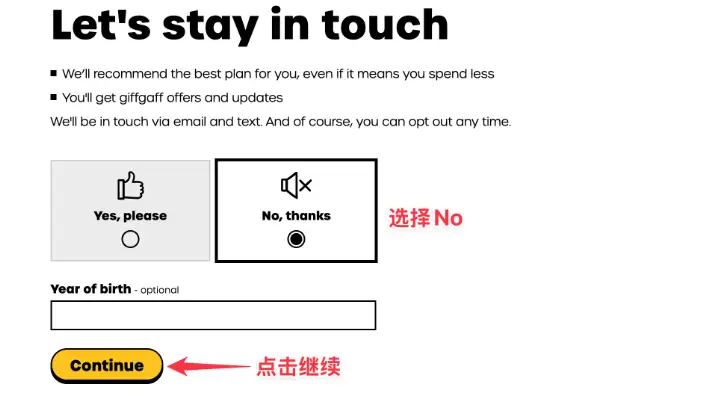
第 5 步：选择 No, thanks
06选择 I don't want a plan
下拉到套餐列表最底部，点击 I don't want a plan / Add credit。不要选择上面的 1GB、2GB、4GB、5GB 套餐。
进入下一页后，看到 Without a plan, our PAYG rates apply，再点击底部黄色 Continue 按钮继续。
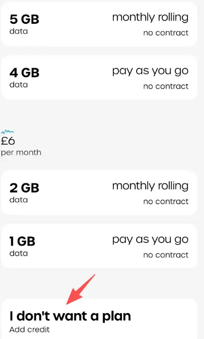
先下拉到最底部，点 I don't want a plan / Add credit
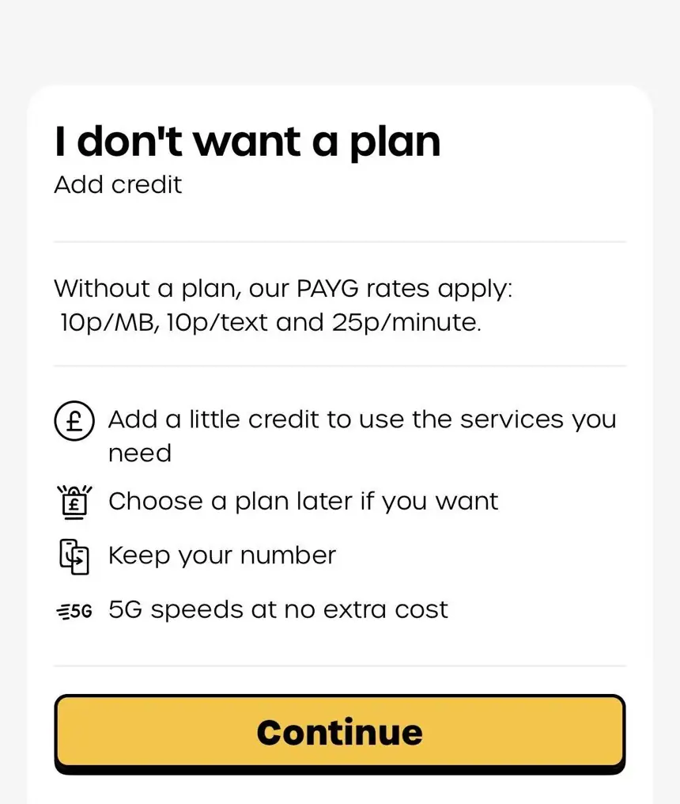
进入确认页后，点击底部黄色 Continue
07充值或兑换 Voucher
进入 Add credit 页面后，可以选择信用卡 / 借记卡充值，也可以点击 Or redeem a top-up voucher 输入 16 位 Voucher 充值码。首次激活通常需要先充值或兑换。
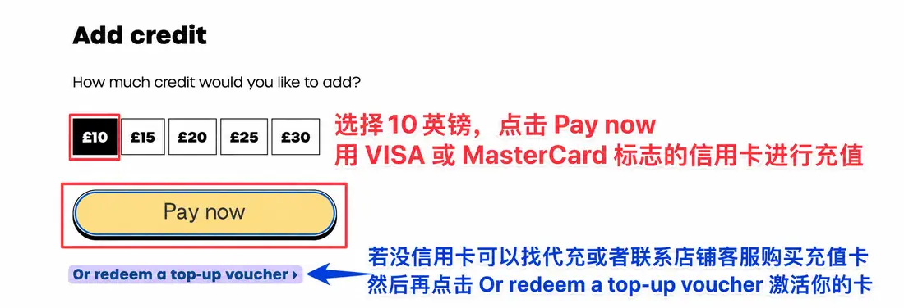
第 7 步：Add credit / Voucher 激活
08填写个人信息
按页面提示填写英文姓名、国家、邮编和地址。建议填写格式完整、可识别的英文地址信息，避免因格式异常导致提交失败。
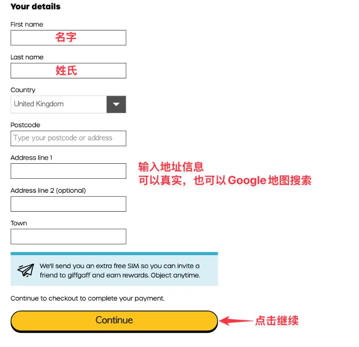
第 8 步：填写个人资料和地址
09完成付款或兑换
如果使用充值卡/Voucher 激活，一般不需要填写信用卡信息；如果使用信用卡充值，需要按页面提示填写卡号、有效期、安全码与账单地址，并确认下单。充值成功后，页面会显示你的英国号码。
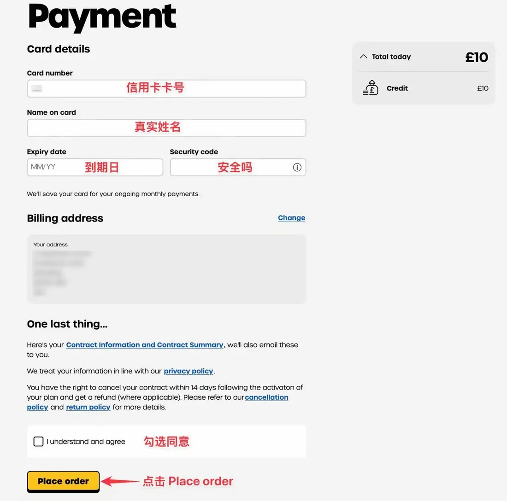
第 9 步：信用卡付款信息
10确认激活状态
回到账户主页后，如果可以看到号码和话费余额，通常说明卡片已经激活成功。随后插卡开机，等待手机搜索信号。
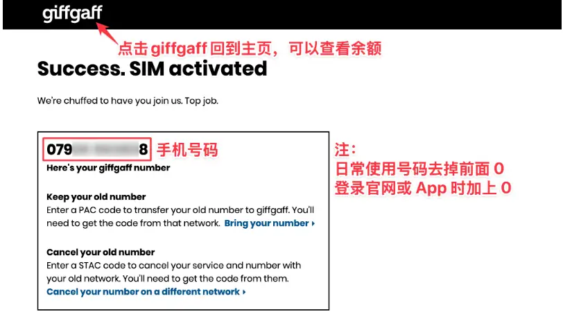
第 10 步：激活成功后查看号码和余额
英国号码格式提醒：页面显示的英国号码通常以 07 开头。如果需要写成国际格式，前面的 0 通常省略，写成 +44 7…。
三、激活后如何确认可以使用
1. 查看余额和号码
回到账户主页后，如果可以看到话费余额和英国号码，通常说明卡片已经激活成功。
如果页面仍显示激活中，请耐心等待。一般可能需要 30 分钟至 1 小时，特殊情况下最迟可能需要 24 小时左右。期间不要反复提交。
2. 插卡等待信号
将 SIM 卡插入手机并开机，等待手机自动搜索网络。一般等待 1–15 分钟左右，信号栏可能出现 R 标识，通常表示当前处于漫游状态。
如无信号，可尝试重启手机、开关飞行模式、手动选网或检查漫游设置。
短信测试建议：激活成功后，手机可能会收到官方激活成功短信。如果没有收到，也不一定代表激活失败，可先查看官网 / App 中的余额、号码和套餐状态。
发送短信测试：建议发送到自己的另一个英国号码、亲友号码，或联系店铺客服获取测试号码。发送短信、拨打电话或使用流量都会产生费用，请确认账户有余额后再操作。
四、漫游资费与流量加购包
giffgaff 没有固定月租。没有套餐时，通常按 PAYG（Pay As You Go，余额按量扣费）模式使用；人在英国以外时，通话、短信和流量可能按漫游资费扣费。
| 项目 | 常见说明 | 费用参考 |
|---|---|---|
| 月租 | 不购买套餐时通常没有固定月租 | 免费 |
| 接收短信 | 接收普通短信通常不收费 | 免费 |
| 发送短信 | 英国以外漫游时按条扣费，具体看目的地 | 常见从 £0.30 / 条 |
| 接听电话 | 英国以外漫游时可能收费 | 常见从 £1 / 分钟 |
| 拨打电话 | 英国以外漫游时可能收费 | 常见从 £1 / 分钟 |
| 移动流量 | 不买漫游流量加购包时，直接开数据费用较高 | 常见从 £0.20 / MB |
注意：不同国家 / 地区的漫游资费可能不同。尤其是直接打开移动数据可能很贵，长期保号或接码用户建议关闭移动数据和数据漫游。
漫游流量加购包 / Travel Data Add-on
如果人在英国以外需要移动数据，可以在 giffgaff App 首页的 My data / View travel data 里查看是否支持购买 Travel Data Add-on。常见容量有 1GB、5GB、10GB，有效期通常为 30 天。
| 容量 | 中国大陆地区曾见参考价 |
|---|---|
| 1GB | £12 |
| 5GB | £24 |
| 10GB | £36 |
以上价格只作为参考，官方可能随时调整。购买前请以 giffgaff App 当前显示的价格、容量、有效期和可用地区为准。
五、长期保号规则
180 天内需要一次有效余额变动
号码从充值激活成功当天开始计算保号周期。之后只要产生一次有效余额变动，比如充值、发短信、打电话或使用移动数据，保号周期就会重新计算。
建议设置 170–175 天提醒
建议卡片激活成功后，马上在手机日历中设置保号提醒。不要卡在最后一天操作，提前维护更稳妥。
可以用于保号的常见操作
- 发送一条收费短信。
- 使用一次移动数据上网。
- 拨打一次收费电话，不包括紧急服务和免费 / 官方客服号码。
- 充值一次话费或购买合适的服务。
官方提醒：giffgaff 通常会在号码可能停用前发送提醒邮件，例如约 1 个月前和约 5 天前。请留意注册邮箱和垃圾邮件箱。若长期没有任何有效使用记录，号码可能被回收，余额也可能作废。
六、短信 / 电话格式
发送短信或拨打电话时，建议使用国际格式：+国家代码+号码。
发送短信示例
如果英国号码示例为 66xxxxxx66：
- iPhone 可输入：004466xxxxxx66
- Android 可输入：+4466xxxxxx66
拨打电话示例
iPhone / Android 均可输入：+4466xxxxxx66
拨号键盘长按数字 0，一般可以输入 "+"。
特别提醒：不建议主动联系中国大陆 +86 号码。国内运营商可能会拦截境外电话和短信，也可能触发反诈风控，导致号码被限制、停机或影响后续使用。
七、邮箱、密码、号码管理
更改号码
如果不满意系统分配的号码，可以在账户中申请更换新的 giffgaff 号码。新号码由系统随机分配。
- 登录 giffgaff 账户。
- 进入 My Profile and Settings，或打开：https://www.giffgaff.com/profile/details/getnumber
- 点击 Get a new giffgaff number。
- 输入账户密码确认。
- 等待系统完成更换，新号码显示到账户中后再使用。
更换期间服务可能暂时中断，最长可能需要约 4 小时。号码更换后通常不可撤销，请确认后再操作。
更换号码注意事项
- 建议避开中国时间 05:30 至 13:00 操作，该时间段内可能无法更换号码。
- 新号码和账户余额可能不会立刻显示，最长可能需要约 4 小时同步到账户中。
- 操作过程中建议全程使用稳定 Wi‑Fi，避免中途断网。
- 每个账户通常最多支持更换 2 次号码；如需第二次更换，建议至少等待 24 小时后再操作。
八、问题排查：无信号 / 收不到短信 / 通话限制
境外卡在中国漫游时，信号、短信和验证码会受到当地漫游网络、手机设置、账户状态以及第三方平台风控影响。建议按下面顺序排查，不要一开始就反复提交验证码。
优先排查 1：刷新网络
- 开启飞行模式 10–15 秒后关闭。
- 进入移动网络 / 蜂窝网络，选择 giffgaff 卡。
- 关闭"自动选择运营商"。
- 手动尝试 中国移动，不行再试 中国联通。
- 重启手机，等待信号稳定后再收验证码。
优先排查 2：切换网络模式
如果手机显示 5G 但短信不稳定，可以把网络模式临时改成 4G / LTE，或选择"自动"。部分地区 2G/3G 网络已减少，不建议固定锁死某一个旧网络。
giffgaff 官方条款也提示，5G 漫游在英国以外并不作为默认可用服务，实际以当地网络支持为准。
优先排查 3：基础设置
- 确认账户已激活，官网 / App 已显示号码。
- 确认手机没有拦截境外短信。
- 清理短信收件箱，避免收件箱已满。
- 关闭勿扰模式，确认不是飞行模式。
- 双卡手机可临时关闭另一张卡测试，避免默认短信 / 默认数据设置混乱。
1. 收不到验证码怎么办？
先判断是哪一种收不到
如果所有短信都收不到：优先排查信号、漫游网络、手机短信设置和账户状态。
如果只有某个平台收不到：通常更可能是平台风控、号码类型、IP 环境、提交频率或账号风险导致，不能保证所有平台都能成功接码。
建议操作顺序
- 先开关飞行模式。
- 手动选择中国移动 / 中国联通。
- 重启手机。
- 等待 5–30 分钟后再试。
- 换一个时间段再提交验证码。
- 仍不行时，优先联系对应平台确认是否支持该号码。
2. 插卡后多久有信号？
正常情况下，插卡后手机需要读取 SIM 信息，并向当地合作网络完成漫游登记。通常等待几分钟即可出现信号，部分地区或刚激活的新卡可能需要更久。
如果刚完成激活，建议先等待 30 分钟至 24 小时，再反复排查。
一直无服务时
- 确认卡已激活，账户能登录。
- 重启手机并重新插卡。
- 关闭自动选网，手动选择中国移动 / 中国联通。
- 确认手机支持当地漫游网络频段，且不是运营商锁机。
3. 无法上网 / 不建议在中国开数据
在中国使用 giffgaff 移动数据漫游费用较高，不建议日常上网。平时请关闭移动数据和数据漫游，只在确有需要且了解资费时临时开启。
如果你确实需要测试移动数据，需同时开启该卡的"移动数据 / 蜂窝数据"和"数据漫游"。测试完成后请立即关闭，避免后台 App 消耗流量。
4. 发不出短信 / 打不出电话
先检查号码格式
- 发中国号码：建议使用 0086 + 手机号 或 +86 + 手机号。
- 发英国号码：建议使用 0044 + 英国号码 或 +44 + 英国号码，英国号码开头的 0 通常要去掉。
再检查网络和余额
- 确认账户有余额。
- 手动选择中国移动或中国联通。
- 重启手机后再发送。
- 如提示"设置了限制"，优先手动选网并检查账户状态。
5. giffgaff 是虚拟号吗？
giffgaff 是英国移动虚拟运营商 MVNO，使用 O2 移动网络。它不是临时接码平台那种一次性虚拟号，但第三方平台仍可能因为号码归属、注册环境、IP、设备或账号风险进行限制。
| 项目 | 临时接码 / 网络虚拟号 | giffgaff SIM / eSIM |
|---|---|---|
| 号码形态 | 多为平台分配的临时号码或网络号码 | 英国移动运营商体系下的手机号 |
| 载体 | 通常不需要实体 SIM / eSIM | 有实体 SIM 或 eSIM，可插入手机使用 |
| 主要用途 | 短期接码、营销测试等 | 长期保号、短信接收、低频通信备用 |
| 风险提醒 | 稳定性和可控性较弱 | 更适合长期持有，但不保证所有平台验证码 |
6. 套餐、0.01 扣费和长期漫游说明
套餐能在中国用吗？
在中国使用时，可以连接 WiFi，并按需要使用英国全局网络环境访问相关页面或应用。注意：这只影响网络访问环境，不会改变 SIM 卡的漫游计费位置；如果使用 giffgaff 移动数据，在中国仍会按官方漫游或旅行数据包规则计费。为避免扣费，不建议把 giffgaff 移动数据当作日常上网流量。
看到小额扣费怎么办？
先登录 giffgaff 官网或 App，查看账户里的余额、使用记录和付款记录。小额扣费通常不是固定规则，可能来自以下几类情况：发送短信、接打电话、语音信箱、移动数据漫游，或支付/汇率换算产生的极小差额。
如果只是 0.01 镑这类很小金额，先以账单明细为准，不要反复插卡开关移动数据。无法判断原因时，把账单截图发给客服协助查看。
可以长期保号吗？
可以作为长期保号和短信备用卡使用，但必须保持账户活跃。建议每 170 天设置提醒，提前完成一次有效操作。
九、余额查询与充值
如何查询余额
- 官网查询：登录 https://www.giffgaff.com 查看余额、套餐和号码状态。
- App 查询：下载并登录 giffgaff 官方 App，在账户首页查看余额和使用记录。
- 拨号 / 短信查询：可尝试拨打
*100#查询余额；也可以拨打 43430 并选择 Option 2，或发送 INFO 到 85075 查看账户信息。
人在英国以外漫游时，部分拨号码或短信指令可能受当地网络影响。如果无法查询，建议优先登录官网或 App 查看。
长期保号用户建议定期登录账户，确认余额和号码状态是否正常。
如何充值
- 登录官网或 App。
- 点击 Add credit。
- 选择充值金额和支付方式。
- 点击 Continue，按页面提示完成付款。
可以使用带有 VISA 或 MasterCard 标志的信用卡 / 借记卡充值。没有合适付款卡时，也可以通过第三方平台或店铺客服购买 giffgaff Voucher 充值卡。
使用 Voucher 时，选择 Or redeem a top-up voucher，输入 16 位数字码完成充值。
十、5 英镑奖励未到账怎么办
适合：已经激活 / 已充值，但 £5 bonus credit 没到账
正确顺序是：先完成 giffgaff 账号激活，并充值或购买符合条件的套餐 / 余额；如果账户里仍然没有显示 5 英镑奖励，再通过官方工单入口请客服核查。
申请前提
账号已经激活，并且已经充值或购买符合条件的服务。还没有充值或买套餐时，不建议直接提交工单。
需要准备
能正常登录 giffgaff 账号，记得大概充值金额和时间。有付款或订单截图更好，没有也可以先提交。
处理方式
通过官方 Ask an Agent 提交说明，客服核查后会在站内消息里回复。
- 先激活 / 充值 确认账号已激活，并已充值或购买符合条件的套餐 / 余额。
- 登录账号 进入 giffgaff 登录页，确保账号能正常登录。
- 提交工单 如果 5 英镑没到账，再进入 Ask an Agent 提交说明。
- 查看回复 回到 Messages from Agents，看处理进度与结果。
第一步：登录 giffgaff 账号
打开官方登录页，输入手机号 / member name / 邮箱和密码登录。如果你从工单入口打开页面，系统也可能会先要求登录。
提示：登录后再操作工单，客服才能根据账号信息核查奖励是否符合条件。
本指南内容整理自 lumoza.top，仅供学习交流。如有更新，请以 giffgaff 官方页面为准。